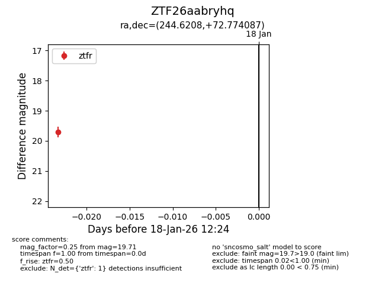
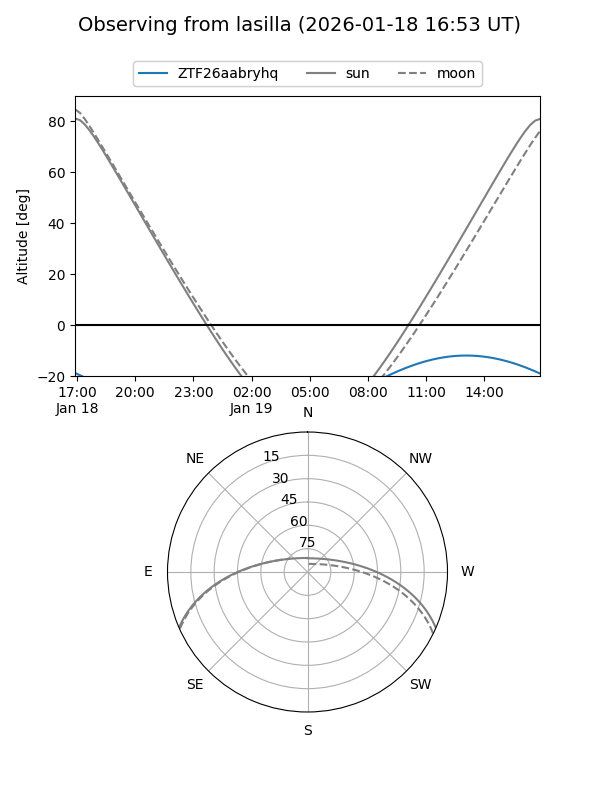
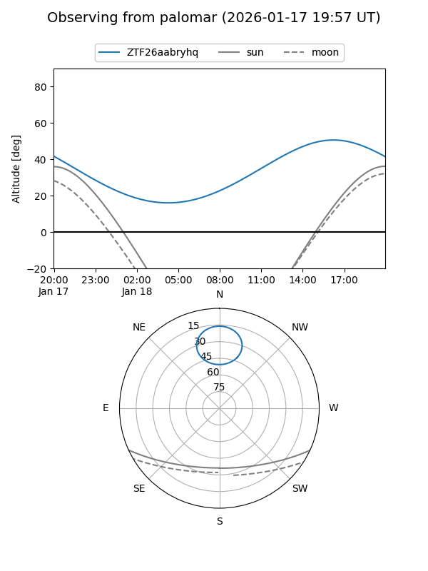

ZTF26aabryhq
Target ZTF26aabryhq at 2026-01-18 12:25
Aliases and brokers:
FINK: link
Lasair: link
ALeRCE: link
alt names
ZTF26aabryhq (ztf,fink_ztf)
Coordinates:
equatorial (ra, dec) = 244.6208,+72.77409
equatorial (HMS+DMS) = 16:18:28.99,+72:46:26.71
galactic (l, b) = (106.0509,+36.77389)
Flags:
Photometry:
last ztfr=19.71
1 ztfr detections
Lightcurve

Visibility


Additional plots